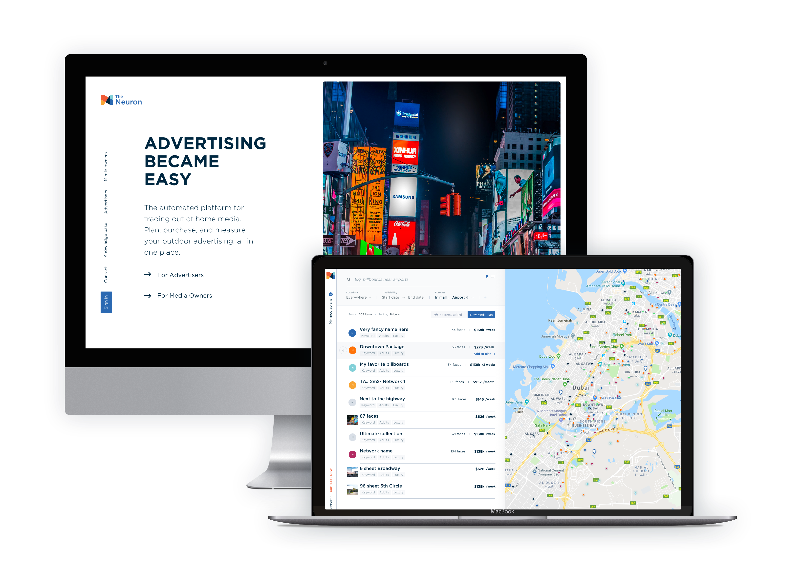
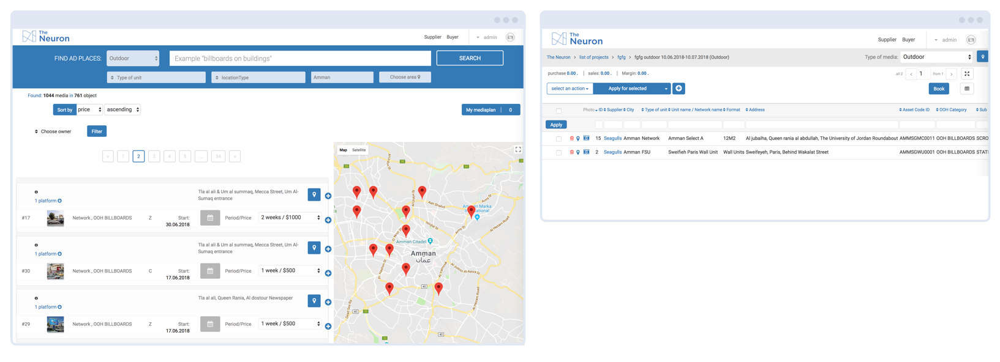
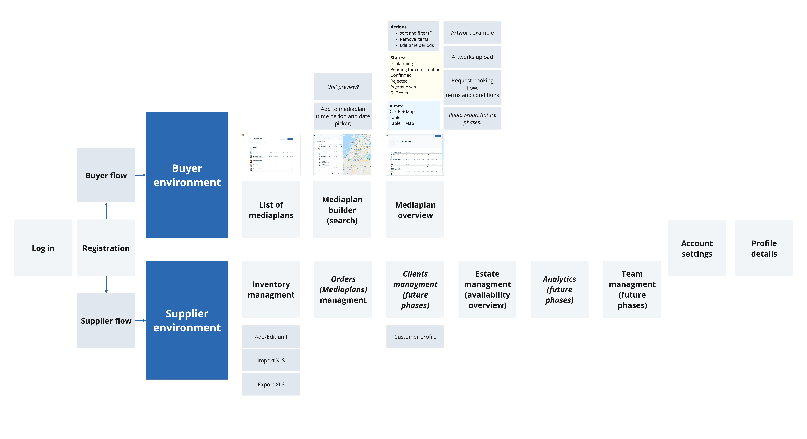
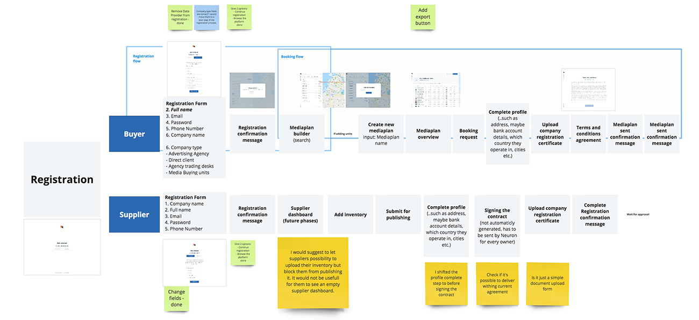
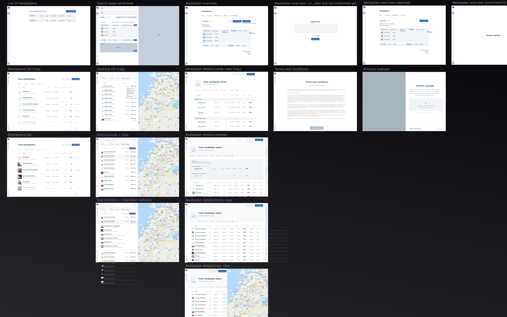
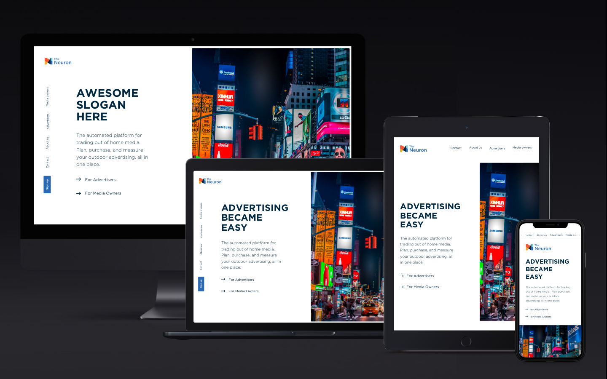

Re-inventing the Out-Of-Home Advertising Industry is a very ambitious project by itself. Even in technologically advanced countries this area stays dark and unwilling to change, in the Middle East it is stuck in the Middle Ages. The Neuron is building the tool that on one hand will help Media Owners manage and sell their Advertising Locations more efficiently and on another hand will create a common marketplace for planning and buying campaigns.
I was responsible for designing the first version of the platform which became the core of the Neuron back in 2010. With the time it evolved functionality-wise and had good success among other clients, but the interfaces became to cluttered and outdated. Moreover the plan was to extend the functionality significantly, and the current set up was not ready for such growth. So I joined the team again to remake the current product and design the future-proof concept for the phases.
I always prefer to start with the big and possibly long term picture. When it is clear which people's and businesses' problems we are aiming to solve, I sketch out the main product environments. In this case the Seller side functionality is very complex, but it's going to be delivered by multiple phases.
To provide for an excellent user experience, I jump into designing basic user flows t away and fit the views and environments directly there. It helps to keep logical connection between parts of the product, instead of twigging and hacking them later in the workflow.
Perfect Designs get created by iterations - starting with quick rough sketches and adding layer by layer, checking with the team and, if possible, with users, constantly zooming out to verify that it still solves the right problem, it evolves into crisp design ideally fitting into the system.
Some of the interactions are not obviously solved. For example there is a map view to preview available items, but they might be group differently - some of them are singe units - one dot on the map, others grouped - multiple dots. The challenge is to show multiple packages on the map and make it easy to navigate between single items and packages. The solution was to use color coding to group dots on the map and highlight them when the network in the search results is hovered.
On another view there should be a table because it is easier to consume such amounts of data. Number of columns can vary, so I had to plan for the edge cases when table rows would not fit the screen width. The solution was to use horizontal scrolling but keep the contextual menu fixed. Map view is not essential, but might be helpful here too, so I made the map hideable.
Showing map, filters and search results on smaller displays.
Designing the website we have faced a challenge to address to 2 very different audience - buyers and sellers - within one brand. Because Neuron wants to be transparent, we have decided to explain the concept for both groups on the main page and create two separate pages with more concrete details.
